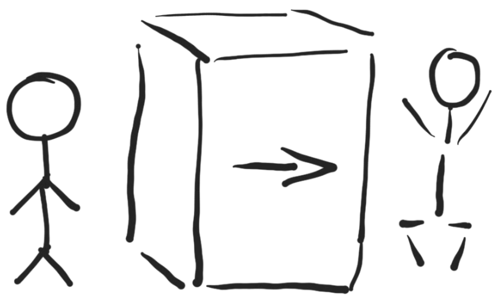

tags:
- Polak na dzikim zachodzie
- Pewnego razu na dzikim zachodzie
- droga emigranta
- przygody
- nauka kultury i języka
pierwsza
Wil west
Gold rush https://www.google.com/imgres?imgurl=https%3A%2F%2Fjwcollinsauthor.files.wordpress.com%2F2018%2F01%2Fshutterstock_101275546.jpg%3Fw%3D300%26h%3D200&imgrefurl=https%3A%2F%2Fjwcollinsauthor.com%2F2018%2F01%2F22%2Fthe-wild-west-5-interesting-facts-about-the-california-gold-rush%2F&docid=wepjTdQEeYkOKM&tbnid=vAzGiaSqHVnCdM%3A&vet=10ahUKEwjgy4rigMzkAhUHx4UKHSziCGkQMwizAShQMFA..i&w=300&h=200&bih=1615&biw=1234&q=wild%20west%20gold%20rush&ved=0ahUKEwjgy4rigMzkAhUHx4UKHSziCGkQMwizAShQMFA&iact=mrc&uact=8
programista.de
Pewnego razu na dzikim zachodzie
Tomasz Sapletta
Polski emigrant mieszkający w Essen
programista.de
Pewnego razu na dzikim zachodzie
Wydanie
E-book, wersja 1.2019.09
-
Aktualna wersja do pobrania:
- book.programista.de/download/pdf
- book.programista.de/download/mobi
- book.programista.de/download/mp3
-
wersja drukowana
-
wersja audio do przesłuchania
Spis treści
1
+- -- -- -- -- --
Autor
Podstawowe informacje:
- o autorze
- o celu powstania
- o historii powstania książki
Spis treści:

Opis Ilustracji
Na ilustracji są przedstawione 3 elementy w poziomie
- Człowiek stojący, wyprostowany w spoczynku
- Duży blok kartonu o długości i wysokości 2 metry
- Człowiek aktywny w podskoku
Relacja pomiędzy tymi elementami pokazuje przemianę pomiędzy pierwszą postacią a tą drugą, która na skutek przejścia przez ten magiczny karton zmieniła się z osoby biernej oczekującej w aktywną, wykonującej podskok.
Qrcode
do audiobooka online ebooka
Następny rozdział:
Dedykacja
Podzi?kowania
dla recenzent?w:
mentor?w:
inspirator?w:
T
O autorze
Nazywam się Tomasz Sapletta, zajmuję się zawodowo programowaniem, od 7 lat w Niemczech, gdzie miałem okazję pracować w wielu zespołach, firmach i meiszkać w wielu miejscach.
Książka jest analizują obecnej sytuacji na rynku pracy w Polsce i Niemczech.
Obecnie realizuję projekty dla firmy, która prowadzi wynajem samochodów, Buchbinder.de W wolnych chwilach programuję opensource.
książka w internecie
Oficjalna strona https://programista.de/
Forum, tej książki https://forum.programista.de
Oferty pracy w niemczech https://praca.programista.de
Aktualne projekty
Prowadzę Bloga w róznych jezykach:
- tom.sapletta.pl
- tom.sapletta.com
- tom.sapletta.de
Darmowe oprogramowanie opensource: + https://github.com/tom-sapletta-com
Obecnie pracuję nad projektem terminala online:
- devopsterminal.com
Zapraszam do skorzystania z narżędzia do tworzenia modularnych stron internetowych:
- apiunit.com
Narzędzie online do szybkiej wyceny projektu:
- estymacja.pl
Oceń
In this project on the first place I focus on its quality. Create good quality involves a lot of analysis, research and work. It takes a lot of time. If you like this project, learned something or you are using it in your applications, please give it a star ⭐️. This is the best motivation for me to continue this work. Thanks!
Udostępnij
As it is written above there are very few really good examples of this type of application. If you think this repository makes a difference and is worth it, please share it with your friends and on social networks. I will be extremely grateful.
Kontakt z autorem
Chętnie poznam Twoją opinię na temat treści, zapraszam do kontaktu: + tom@sapletta.com
kulisy powstania i motywacje przy pisaniu książki:
Dlaczego powstała ta książka ?
Na codzień tworzę wolne i otwarte orpgramowanie: open-source chciałbym również podzielić się czym święcej, poprzez wymianę doświadczeń open - experience
Jak długo była pisana
Przez kilka tygodni w wolnym czasie pomiędzy wychowaniem dziecka. Trzeba jednak założyć fakt, że wcześniej przygotowywałem kilka myśli i analiz, które przyczyniły się do mentalnej dojrzałości. Gdyż sam fakt postanowienia napisania to była chwila
Nieopublikowane rozdziały
Postanowiłem, że nie opublikuję w książce rodziału dotyczącego kultury, ponieważ może nie każdego to interesować i trudno jest mówić o czymś co należy poznać w praktyce, przeżyć.
Postanowiłem, że to bęzie punktem wyjścia do bloga na temat róznic niemeicko polskich i będzie to forum, gdzie każdy będzie mógł podzielić się swoją wiedzą, zweryfikowac je w żywej dyskusji, tk by budowac aktualną formę wiedzy o niemczech, czym są dzisiaj, czym mogą być jutro.
Po co książka o niemckiej kulturze?
- bo okazuje się, że poznanie języka nie wystarczy
- kultura to coś ponad słowami
znajomość kultury pozwala na rozumienie wiele spraw bez wyjasniania bo znamy kontekst i stosunek partnera w rozmowie do treści o których mówimy.
Ta wiedza może być tym bardziej przydatna im mniej znamy język, gdyż znajomość akcentu i języka można się nauczyć,
ale jak się nie zna kulturty to można szybko zrazić do siebie ludzi nie wiedząc nawet o tym!
Bohaterowie
doświadczenia, historie
zebrane doświadczenia kilku ludzi i podsumowanie wniosków z tego wynikających język przystęny, prowadzący do wyjaśnienia kilku stereotypów dotykająccyh obu stron (rzeki) Odry.
Bohaterami książki są:
Szablon opisu:
charketrystka, czym się zajmuje się obecnie
historia, czym zajmowałem się w cześniej
początek, jak zaczałem programować
początek w de
ew. koniec w DE
Marzenia, plany kontra rzeczywistość
Strony w procesie poszukiwania i walki o pracę
-
kandydaci na stanowiska
-
firmy rekrutujące cf,
-
pracodawcy
- ktos z taxi, mehr, inno, check, buch, waw
Rola każdej ze stron
na jakie kompromisy pójdzie polski pracodawca a na jakie niemiecki gdzie leży punkt ciężkości, na co się zgodzi a na co już nie
2
++ -- -- -- -- --
Książka
Analiza zawartości książki:
- streszczenie książki
- charakterystyka
Spis treści:
Opis Ilustracji
Na ilustracji są przedstawione 3 elementy w poziomie
- Człowiek stojący, wyprostowany w spoczynku
- Duży blok kartonu o długości i wysokości 2 metry
- Człowiek aktywny w podskoku
Relacja pomiędzy tymi elementami pokazuje przemianę pomiędzy pierwszą postacią a tą drugą, która na skutek przejścia przez ten magiczny karton zmieniła się z osoby biernej oczekującej w aktywną, wykonującej podskok.
Qrcode
do audiobooka online ebooka
Następny rozdział: Emigracja
Streszczenie zawartości
Zakres tematyczny jest na zmianę w każdym kolejnym rozdziale o technicznych kwestiach związanych z zawodem i kwestiach społeczno, organizacyjnych, prawnych.
- zawód programista
- kompetencje
- kariera
- narzędzia
Ksiazka zostala podzielona na czesci w zaleznosci od tego na jakim etapie jestes i dokad zmierzasz.
Mim celem jest stworzenie mapy mozliwosci z drogowskazami dla ludzi ktorzy chca rozeznac czego tak na prawde szukaja i zadaja sobie pytania jak tam dotrzec.
-
Napisales juz kilka programow i chcialbys rozwijac te zdolnosci ale nie wiesz czy masz szanse na rynku niemieckim, bo znasz angielski
-
Znasz jezyk niemiecki, kulture ale nie znasz sie na programowaniu:
- moje narzedzia + nodejs + python + firma szukajaca junirorow
glownie webdevelopment i web app, bo na to jest zapotrzebowanie, uzycie gotowych narzedzi + wizualna apicra i apiunit od razu wejscie na pole wysokiej produktywnosci
-
Znasz sie na programowaniu, bo robisz to od wielu lat, szukasz nowych wyzwań, znasz angielski, być może niemiecki i kulturę niemiecką ale chcialbyś poznać jak najefektywniej bez marnowania energii i czasu na niepotrzebne dziaania dotrzec do pracodawcy niemieckiego i tam dalej rozwijac swoje umiejetnosci.
-
jestes w niemczech, czyli znasz niemiecki, angielski, polski, ... i myslisz o zmianie zawodu ale obawiasz sie ze nie jest to proste i chcialbys sie upewnic ze to wlasciwa decyzja i okreslic jak to zrobic najefektywniej i bezpolesnie dla zycia prywatnego.
-
Potrzebujesz wiecej niz jest zawarte w tej ksiazce a nie chcesz czekac do nastepnego wydania: kontakt ze mna w celu otrzymania wskazowek pozwalajacych od razu na realizacje, usluga platna ale spersonalizowana z gwarancja zwrotu w razie niezadowolenia w ciagu 2 tygodni.
support dla niecierpliwych na dluzej jesli jest taka potrzeba
- W zasadzie nie musisz czytac tej ksiazki bo nie masz zadnych pytan, zapraszamy do napisania kolejnej czesci, wzbogaconej o wiecej detali i aktualnych zagadnien z branzy. Jesli moglbys zaoferowac pomoc tym, ktorzy pracy poszukuja a lbo juz to robisz to zapraszamy
Konwencja
Wynika z mojego sposobu funkcjonowania
Książka
Temat przewodni
Książka napisana po polsku dla Polaków o Polakach w Niemczech w kontekście aktualnych zmian i ewentualnego wyjazdu w roku 2020. Autor wyrusza w podróż po jego ostatnich 7 latach życia nie tylko na zachodzie ale również południu Niemiec na Bawarii. Przytoczone wywiady i dane, pozwalają na zapoznanie się z aktualną sytuacją po drugiej strony Odry.
Cel
Celem książki nie było wchodzenie w techniczne zagadnienia, a kulturowe, społeczne, prawne, gdyż to one decydują o tym czy się zostaje na dłużej w danym kraju.
Istotne są też obecne warunki życia, komfort. Uznałem, że dla każdego kto wyjeżdża za granicę, zwłaszcza samotnie, istotne jest by przez pierwsze tygodnie mieć jasny obraz sytuacji i wiedzieć czego się spodziewać, jakie są normy i co nie mieści się w jej granicach.
- Budowanie świadomości na temat kultury Niemieckiej
Determinacja
Drogi czytelniku, jeśli szukasz motywacji do wyjazdu to nie znajdziesz jej w tej książce. Od 7 lat nie przekonałem ani jednej osoby do wyjazdu mimo, że wypowiadałem się raczej pozytywnie. Z drugiej strony, prawda jest taka, że ja sam bym siebie nie przekonał do pozostania w Polsce. Nie chciałbym nikogo przekonywać do zmiany przekonań.
Tak znaczące zmiany w czyimś życiu są raczej:
- rezultatem a nie przyczyną
- determinacją a nie motywacją
- silnym wewnętrznym przekonaniem a nie emocją wynikającej z namowy, czy przeczytania wiadomości, artykułu czy książki.
Czym nie jest ta książka
Książka to miks wiedzy, zebranej z kilkudziesięciu książek, jak sam autor stwierdza, że nie wszystko musi się “kompilować” to znaczy, że część wiedzy to dość mocno wyrwane z kontekstu wnioski, które przy wgłębieniu się w temat mogę się okazać trochę naciągane.
O czym nie jest
Obecnie w dobie otwartych mediów trudno nie powielić w różnych formach tego samego tematu, dlatego tym bardziej warto sięgać do książek opisujących wąsko pewne zagadnienia a przy tym kompleksowo je omawiając inaczej niż w przypadku artykułów, czy opinii, które zawierają wyrywkowe spojrzenie na pewne fakty.
Dla kogo jest
w pierwszej kolejności dla programistów zainteresowanych emigracją do krajów niemieckojęzycznych. W drugiej dla Polaków, którzy chcą się upewnić, że nie chcą emigrować, chcą świadomie podjąć decyzję. W trzeciej dla tych, którzy jeszcze nie są programistami a mają wątpliwości, nawet jeśli nie wyjadą po lekturze tej książki, to mogą poprzez zawarte w książce informacje zwiększyć świadomość na temat rynku pracy i własnej wartości na nim. Ta ksiazka jest napisana dla tych, ktorzy zajmuja sie lub chca zajmowac profesjonalnie programowaniem.
Dla tych, którzy są programistami, ale myślą o przekwalifikowaniu np webdev do programisty desktop, itp
Dla tych, którzy nie chcą na długo, ale chcą spróbować, wiedzą, że nie wytrzymają dłużej za granicą, ale chcą mieć ciekawe doświadzczenie, bo np. mają możliwość wyjazdu w delegacje lub zamierzają otworzyć firmę w niemczech
Dla kogo nie jest
dla tych, którzy:
- wracają z zachodu na wschód.
- chcieliby by ta książka zmieniła ich życie...
O kim jest
o ludziach, którzy nie bali się zaryzykować i stale podnoszą swoje kwalifikacje, za które otrzymują dobre wynagrodzenie Którzy zastanawiają się co mogliby zrobić lepiej.
O kim nie jest
o gwiazdach Youtuba, celebrytach internetowych, sławach naszych czasów
Język niemiecki w książce
Nawet jeśli historia nie okazę się dla Ciebie ciekawa to obecność niemieckich tytułów
oraz znaczeń wielu wyrażeń
pozwoli oswoić się częściowo z pewnymi nazwami
to dodatkowy benefit
Czym wyróżnia się książka
o których warto zebrać kilka różnych opinii z różnych punktów widzenia.
Ta pozycja skupia się na tym, co konkretnie robić i jak przygotować się do pierwszej pracy,
podczas gdy Zawód
skupia większą uwagę na błędach i pułapkach, na które możesz wpaść w karierze programisty oraz daje sporo refleksji o zawodzie programisty jako takim, często obalając mity jakie panują w mediach.
Wziąłem pod uwagę, że czytelnik
może znać książki z 2018-2019 roku z dziedziny IT więc mogę ominąc te rzeczy tam omawiane i przytoczyć książki innych autorów omawiające szerzej pewne sprawy z ostatnich lat.
Programowanie a życie
Są na tym świecie ludzie, którzy myślą że zostaną programistą po tym, jak przeczytają książkę o byciu programistą, jednak są też tacy, którzy wiedzą, że trzeba się uczyć, szukać informacji samodzielnie, być wybitnie cierpliwym i upartym...
Obecne podejście do pisania, po co pisać książki?
Wchodząc w rolę pisarza postanowiłem przemyśleć co i w jaki sposób, by było ciekawie. Chciałem przekazać kilka informacji, które niekoniecznie muszą być znane nawet tym, którzy mieszkają od lat w Niemczech.
Moje pióro, czyli jak piszę?
Niektórzy przyjmują dobrą strategię - pisać krótko. Inni rozwlekają treść na wątki, które mogą być zamknięte w kilku zdaniach a nie stronach. Jak poznać, kiedy jest za krótko, tzn niejasno, a kiedy za dużo?
Można jeszcze inaczej ...
Negatywne
w kilku rozdziałach przeprowadziłem analizę sytuacji po dwóch stronach: + negatywna + pozytywna
oczywiście zaczynam od negatywnej, w sensie mentalnym, emocjonalnym, ale w praktyce każde negatywne doświadczenie jest źródłem wiedzy o nas samych, dzięki czemu możemy następnym razem nie popełnić tego samego błędu.
Moja strategia tworzenia
Nie jestem zawodowym pisarzem, ale jestem zawodowym programistą, a więc przyjąłem standardy, którymi kieruję się na co dzień.
Przy tworzeniu oprogramowania dzielę zadania na jak najmniejsze identyfikowalne części, które mają konkretny cel, najlepiej jeden. Nazywam to modularyzacja, jest to też zgodne ze wzorcem single responsibility.
Każda część jest indywidualna, być może książce przez to brakuje polotu, ale to nie jest książka mająca wywyłać emocje i zachwyty.
Najpierw tworzę specyfyikację:
- co w ogóle chcę osiągnąć
- potem nazywam każdą część
Dlatego w każdym rozdziale jest pierwsza strona opisująca:
- po co powstał ten rozdział
- co ma zawierać ten rozdział
- dodatkowe informacje
- rysunek dający skrótowy obraz zawartości
W ten sposób łatwo ktoś kto czyta może udzielić mi rady, czy coś jest niepotrzeben, wówczas łatwiej uciąć, lub coś jest niełatwe, wtedy mogę po prostu napisać od nowa jakąś część.
Moje życzenie, jest takie, by tą książkę czytało się jak dobry programistyczny kod. Klarownie, bez zbędnych pętli.
Streszczenie
Książka opisuje co to jest IT, jakie perspektywy
Kontekst, ramy
Treść książki osadzona jest w określonym ograniczonym kontekście:
- branża IT
- rynek pracy w niemczech
- przeprowadzka lub/i przekwalifikowanie się
- ograniczenia temu towarzyszące
Pytania i odpowiedzi
Jaki jest na prawdę kraj i ludzie tam zamieszkujący?
Co sprawia, że ten Niemcy ciągle potrzebują obcokrajowców do budowania największej europejskiej gospodarki?
Co nowego możemy dowiedzieć się o naszych zachodnich sąsiadach?
często dowiadujemy się jak z mediów, historii w szkołach i opowieści znajomych?
Ale dlaczego tak jest, już trudniej odpowiedzieć...
Jak to wygląda w XXI wieku z perspektywy kilku ostatnich lat?
Czy warto zdecydować się na zmianę wszystkiego?
- kultury
- języka
- obowiązujących przepisów prawa
- pracy
Mam nadzieję, że te wątpliwości zostaną ostatecznie rozwiane w oparciu o informacje zawarte w tej książce.
3
++ +- -- -- -- --
Emigracja
Korzyści i trudności:
- opisanie szerszej skali, wszystkich imigrantów w Niemczech
- Jakie są atuty poszczególnych narodowości i grup etnicznych
- jakie na tym tle są atuty Polonii
Spis treści:
- Odkrycie Ameryki
- Historia lubi się powtarzać
- Analiza emigracji
- Negatywne sktuki emigracji
- Poztywne skutki emigracji
- Przykładowe komentarze
Opis Ilustracji
Qrcode
do audiobooka online ebooka
Wstęp
Kiedyś, dawno, dawno temu, na dzikim zachodzie...
Po odkryciu złota w Kalifornii w połowie XIX wieku wielu Europejczyków wyruszyło na "Dziki Zachód" w poszukiwaniu wolności, przygód, sławy i oczywiście złota.
W latach 1848–1849 liczba osób ogarniętych tzw. gorączką złota wzrosła z 6000 do ponad 100 000. Nie wszyscy uczestnicy tej romantycznej przygody zdobywali wielkie majątki i dożyli sędziwych dni w szczęściu i bogactwie, niekiedy na próżno ciężko pracowali w strasznych warunkach lub ginęli z rąk bandytów.
Historia lubi się powtarzać?
https://forum.the-west.pl/index.php?threads/polacy-na-dzikim-zachodzie-d.20142/
Jamestown, 1608 rok
Pierwsza emigracja
1 października 1608 r. na pokładzie statku z zaopatrzeniem „Mary and Margaret” do Ameryki Północnej trafiło czterech pierwszych polskich osadników. Byli to dwaj polscy szlachcice: Michał Łowicki z Londynu i Jan Bogdan z Kołomyi, oraz rzemieślnicy - dmuchacz szkła Zbigniew Stefański z Włocławka i Jan (Jur) Mata, który miał zajmować się wyrobem mydła - wszyscy z żonami i dziećmi.
[Kapitan Smith znał Rzeczpospolitą i jej mieszkańców. Gdy jako sierota opuścił ojczystą Anglię, przez wiele lat wędrował po Europie w poszukiwaniu przygód. Brał udział w wojnie węgiersko-tureckiej, podczas której dostał się do niewoli. Znalazł się w rękach Tatarów i trafił na Krym. Udało mu się uciec i przez Rosję i Rzeczpospolitą wrócił na zachód. W swoich wspomnieniach z wdzięcznością opisywał gościnność i pomoc, jaką okazali mu Polacy. Poznał ich jako oddanych przyjaciół i ludzi umiejących nawiązać współpracę z innymi. Zapamiętał, jakim szacunkiem darzą pracę].
Polacy szybko zapewnili Jamestown świeżą wodę, budując pierwsze w Ameryce studnie. Londyńska Virginia Company świadomie wynajęła polskich robotników, wiedząc, jakimi walorami odznaczało się polskie hutnictwo szkła. Złożono zapotrzebowanie także na innych rzemieślników z Polski - potrzebni byli ludzie do produkcji mydła, smoły i materiałów budowlanych. Polacy, którzy zastali kolonię w stanie upadku, w krótkim czasie postawili ją na nogi. Zbudowali hutę szkła, która stała się pierwszą fabryką na terenie Ameryki Północnej. Produkowano tam różnokolorowe paciorki i błyskotki, jako walutę wymienną w handlu z Indianami.
Polacy pracowali z większym entuzjazmem, ponieważ w przeciwieństwie do Anglików byli zatrudniani jako tzw. „kontraktorzy” ze stałą, dobrą pensją 36 szylingów miesięcznie. Takiego wynagrodzenia Anglicy nie dostawali. Szybko więc rozpoczęli produkcję ługu i mydła, uruchomili tartak, a nawet pracowali przy budowie łodzi i żaglowców.
Jednak z zapisków kapitana Smitha wiemy również jak w praktyce wyglądały warunki życia pierwszych Polaków w Ameryce i jakie były przyczyny niepowodzeń kolonii Jamestown.
Smith opisał miedzy innymi, że Jamestown nie mogło utrzymać się z samej tylko pracy i wysiłku kolonistów - konieczne były stałe dostawy zaopatrzenia i żywności z Europy - a tych brakowało. Ponieważ Jamestown początkowo nie miało gruntów rolnych, bo ciągłe ataki Indian trzymały kolonistów praktycznie uwięzionych w osadzie, zapasy żywności szybko wyczerpały się, a zimą zaczął doskwierać głód.
Do Kompanii Wirginia w Londynie Smith pisał: "Wynajęcie Polaków i Holendrów do wyrobu smoły, dziegciu, szkła czy ługu byłoby naprawdę celowe, gdyby kraj tutaj się bardziej zaludnił i został zaopatrzony we wszystkie konieczne do życia rzeczy. Ale kierowanie tu siedemdziesięciu ludzi bez żywności nie było należycie doradzone i rozważone". Jeśli zamierzacie dalej wysyłać tu ludzi - to tylko rolników, ogrodników i rybaków, kowali i murarzy, ludzi umiejących karczować drzewa...".
Niestety Kompania miała zupełnie inne plany i oczekiwała, że Jamestown natychmiast zacznie przynosić zyski. Jednak produkowane przez Polaków i Holendrów ług, potas, smoła i dziegieć, eksportowane do Anglii, dawały zyski niewielkie.
Wśród oficerów w Jamestown wybuchały bratobójcze kłótnie i bójki, a sam Smith ranny musiał szybko odpłynąć do Anglii w obawie o swoje życie.
Kompania Wirginii nadal wysyłała do Jamestown głównie rzemieślników, wśród nich Polaków, których liczba wzrosła do pięćdziesięciu. W 1610 r. przybył tam Wawrzyniec Bohun (Lawrence Bohun), lekarz przyboczny.
Jamestown przekształciło się w fort z 60 domami, otoczonymi drewniano-ziemnymi umocnieniami. Wokół rozciągały się uprawy warzyw i tytoniu, (który też eksportowano do Anglii). Aby poskromić Indian podejmowano przeciwko z nim najazdy zbrojne. Gubernator lord Yeardley napisał, że w 1616 r. w jednym z udanych najazdów na plemię Czikahomin uczestniczył Robert Polak (Robert a Polonian) i pojmano wtedy indiańskiego wodza.
Jamestown, 1619 rok
Pierwszy strajk w Ameryce
W 1619 r. Jamestown liczyło ponad 2 tysiące mieszkańców i składało się z 11 osiedli (dzielnic). Wówczas miasto otrzymało od króla prawo do własnego samorządu i postanowiono zorganizować pierwsze lokalne wybory. Każda dzielnica miała wybrać po 2 przedstawicieli do nowego zarządu, zwanego "House of Burgesses”, czyli Izba Mieszczan. Jednak cudzoziemcy, do których zaliczano też Polaków (nazywanych „Polackers”), nie mieli prawa głosu. Polacy poczuli się urażeni tą decyzją i uznali, że powinni mieć udział w zarządzaniu miastem, w którym mieszkali i pracowali. Gubernator Yeardley uznał żądania Polaków za dziwaczne. Wobec tego wszyscy Polacy z Jamestown porzucili pracę, co poważnie ograniczyło produkcję w kolonii.
Wobec przedłużającego się polskiego strajku zainterweniowała Kompania z Londynu: "Co do Polaków zamieszkałych w Wirginii postanowiono (pomimo poprzednich rozporządzeń temu przeciwnych), że mają być oni obdarzeni prawem głosu i uczynieni tak wolnymi, jak każdy inny mieszkaniec tutejszy. Ażeby zaś ich zręczność w robieniu smoły, dziegciu i ługu nie zaginęła wraz z nimi, postanawiamy też, że niektórzy młodzieńcy mają im być przydani do wyuczenia się w ich zręczności i wiedzy dla przyszłości i dla dobra kraju".
Tak więc to Polacy byli organizatorami pierwszego strajku w Ameryce Północnej i to w dodatku strajku udanego, który pozwolił im uzyskać prawa obywatelskie.
Jamestown, 2007
Obecna sytuacja
Kiedy w roku 2007 Jamestown obchodziło 400-lecie założenia, żadna organizacja polonijna nie zadbała o upamiętnienie obecności Polaków wśród pierwszych osadników, w związku z tym Amerykanie polskiego pochodzenia nie zostali zaproszeni do udziału w obchodach.
17 grudnia 2008 r. Narodowy Bank Polski upamiętnił rocznicę przypłynięcia Polaków do Jamestown przez wydanie 3 monet o nominale 2, 10 i 20 złotych. Na uwagę zasługuje srebrna moneta o nominale 10 zł, która jako jedyna moneta wydana w Polsce posiada zamiast metalowego środka soczewkę szklaną, która symbolizuje fakt, że pierwsi polscy osadnicy byli hutnikami szkła.
https://forum.the-west.pl/index.php?threads/polacy-na-dzikim-zachodzie-d.20142/
https://forum.the-west.pl/index.php?threads/pierwsi-polacy-w-ameryce.59519/
Analiza
Obecnym "Dzikim" zachodem dla Polaków są Niemcy, gdzie miliony Polaków w ostatniej dekadzie, wyruszło (nie za złote lecz) za chlebem i w poszukiwaniu lepszego życia.
W książce została opisana historia kilku z nich...
Wnioski z historii Jamestown
Wnioski z obecnej sytuacji Polaków w Niemczech
- Polskie mniejszości w Niemczech nie są nawet formalnie nazwane, tak jakby ich nie było mimo, że są 2-3 mneijszością narodową w Niemczech
- Obsługa w urzędach, nawet w bankomatach nie jest możliwa po polsku, ale w języku arabsku tak?
Negatywne skutki emigracji Polaków
Zacznę od złej wiadomości:
Mniejszość narodowa w Niemczech
oficjalnie nie istnieje
Pozytywne skutki emigracji Polaków do niemiec
hybrydy
Dzięki pracy za granicą, nawet czasową tworzą się hybrydy
ludzie, którzy mając doświadczenie za granicą przynoszą te doświadczenia do Polski
Rodzą się dwa pytania:
-
Jak to wpływa na rynek pracy w Polsce?
- znajomość kultury, języka,
- stworzenie biznesu opartego o znajomości zdobyte na zachodzie, eksport produktów i usług
-
Jak to wpływa na niemiecki rynek w Niemczech?
- możliwość zareklamowania zalet zatrudniania programistów z Polski + cechy podobne jakie posiadają inni pracownicy, rzemieślnicy z Polski: + wszechstronność, pomysłowość, szybka adaptacja do zmian i nowych technologii
Pozytywni
Ostatnio pytałem większość moich znajomych i wszyscy podkreślają, że wcześniej czy póżniej chcą stąd wyjechać tak samo jak ja. Niestety nie znam za bardzo informatyków, bo studiowałem coś innego i dopiero teraz staram się przekwalifikować na ten zawód i dlatego jestem ciekawy jak wygląda sprawa u was? Mój wiek to 22 lata i kieruje pytanie głównie do młodszych osób.
Praca aza granicą jako sposób na realizację marzeń o podróżach
- stopem
- delegacje
- praca zdalna
Dla tych co chcą nauczyć się żeby i tak w PL pracować, ale mając doświadczenie po niemiecku
Jeśli chodzi o inne języki, które wymieniłeś, niemiecki zdecydowanie wygrywa dla mnie, jeśli chodzi o przydatność w IT w Polsce. Widuję całkiem sporo ofert do projektów z niemieckojęzycznymi klientami, nawet u mnie w mieście -z tym, że wymagany poziom języka to najczęściej ok. B2. Czyli sprawna komunikacja.
Komentarze
Zamiast rozpisywać się w analizie, wolałem zaprezentować żywe komentarze z którymi stykam się w rozmowach, zasłyszane i zacytowane z internetu.
Komentarze z Polski
Ci co już byli, wrócili, lub nie chcą wyjechać, ewentualnie na krótko
Na zachodzie żyje się lepiej
Ostatnio dosyć często pojawia się ten wątek wśród moich znajomych, którzy nie pracują w IT, że jednak lepiej jest na zachodzie, szczególnie w Niemczech. Jeżeli chodzi o IT to to nie ma większego znaczenia, gdy człowiek już nabierze doświadczenia na rynku. Spokojnie mieszkając i pracując w Polsce można dostać bardzo porównywalną stawkę jak w Niemczech, UK, USA itd. Sam ostatnio doszedłem do wniosku, że gdybym miał wyjechać do innego kraju to typowo w celach turystycznych na dłuższy okres, pracując przy tym zdalnie.
W celach edukacyjnych
Według mnie wyjazd to super pomysł jeśli jest konkretny powód, np. ktoś dobrze sobie radzi ale chce spróbować innej kultury, innych zarobków, chce zobaczyć jak to jest w innym kraju Gorzej jak ktoś planując wyjazd próbuje wytłumaczyć sobie swój poziom umiejętności.
Teraz bym nie wyjechał
Kiedyś bardzo chciałem wyjechać, teraz mi "trochę" przeszło jak widzę co się dzieje na Zachodzie :D Islam, ataki terrorstyczne Słyszałem od znajomego który zajmuje się automatyką przemysłową (SCADA). Pojechał służbowo 3-4 tygodnie temu, druga połowa sierpnia, do Malmo w Szwecji. Mówi, że kiedyś był to niemal raj na ziemi, a teraz strach wyjść z domu :) Jednego dnia uchodźcy spalili ok. 60 samochodów w biały dzień, obrzucali sklepy kamieniami, ludziom wybili zęby. A tydzień później z dymem puścili 80 samochodów. Tak się bawią gangi powstałe z nachodźców.
Pieniądze to nie powód
Generalnie uważam, że programista nie ma potrzeby wyprowadzki za granice w celach zarobkowych, bo stawki wszędzie są podobne, różnią się tylko tak na prawdę kosztami życia, gdzie np. w takim UK koszty są bardzo duże, a w Polsce już mniejsze w porównaniu właśnie z UK.
Mieszkam w Belgii od urodzenia
*Od urodzenia mieszkam w Belgii i nie wyobrażam sobie powrotu do polski. A wszystko przez zarobki gdzie w Belgii w branży o parę razy większe. Podobnie z kupnem urządzeń itp. Mieszkając w Polsce, musiałbym pracować jakieś 6 miesięcy aby pozwolić sobie na zakup aktualnego laptopa. Co do wyjazdu, to planuję wyjechać gdzieś dalej prawdopodobnie do Szwajcarii lub Kanady. Powodem tego są astronomiczne podatki dla singli (50% od dochodu) i cały bajzel który dzieje się w tym kraju. z Greeenone Stary wyjadacz (12,360 p.) W Belgii wygląda to tak:
Mój dobry znajomy pracuje w agencji Web devu która zajmuje się tworzenie stron pod wordpress. Wymagana jest tam znajomość html css js oraz WP na dobry poziomie a php na podstawowy. Każdy pracownik dostaje klientów z którymi sam się kontaktuje i tworzy dla nich strony
Miesięczny minimalny zarobek to 3 500€ a maksymalny dochodzi nawet do 4 500€ - 5 000€. Zależy od tego czy się załatwiło klientów ponad normę. Agencja dodatkowo płaci za bilety na komunikację miejską oraz czeki na jedzenie (7€ dziennie).*
Specjalizacja
Osobiście, myślałem o pracy za granicą, ale tylko dlatego, żeby lepiej poznać dany kraj i pożyć tam przez kilka miesięcy. Jeśli chodzi o emigrację zarobkową to moim skromnym zdaniem opłaca się wyjechać tylko jako specjalista w jakiejś dziedzinie albo chociaż osoba doświadczona, bo w innym wypadku
Prywatne problemy
wśród moich znajomych na stałe za granicę wyemigrowały w 95% osoby, którym nie wyszło w życiu. Bo po kilku latach opiepszania się i kilku złych decyzjach obudziły się, że będą musiały pracować za 2-2,5 tys. netto i wyjazd za granicę i pensja w euro czy funtach był szansą dla nich na odbicie sobie braku umiejętności/wykształcenia. Najgorsze w tym wszystkim jest to, że zazwyczaj pracowali oni fizycznie i po paru latach mając te 25 lat, dalej nie mają żadnych konkretnych umiejętności czy doświadczenia pozwalającego zdobyć im dobrą pracę(wyjątkiem są budowlańcy) i Polsce dalej czeka na nich max 2,5k. Poza tym za granicą spotkałem się także z dyskryminacją oraz rasizmem (antypolonizmem). Podsumowując, uważam że, jeśli nie masz pomysłu na siebie to wyjazd za granicę nie będzie rozwiązaniem Twoich problemów.
Komentarze z Niemiec
komentarze Polaków mieszkających w Niemczech
4
++ ++ -- -- -- --
Społeczeństwo
Jak myśli społeczeństwo w 2020:
- Co ludzie myślą o emigracji
- jakie są rzeczywiste powodu wyjazdu, na jak długo, co po powrocie
- jakie są metody podejścia
Spis treści:
Opis Ilustracji
Qrcode
do audiobooka online ebooka
Kryzys? Kryzys!
- Niemcy drukują na potęgę 100EUR, tutaj dowód: fot, żródło: https://www.bundesbank.de/resource/blob/762314/f1afccf714a8597c6b363a560a31a6c5/mL/die-neuen-100-und-200-euro-banknoten-data.pdf
więcej na stronie: https://www.bundesbank.de/de/aufgaben/themen/neue-100-euro-und-200-euro-banknoten-ab-dem-28-mai-im-umlauf--759776
Kiedy?
tak wiele od 2008 roku mówi się o kryzysie a ja znowu rozpocząłem działalność w 11 lat od kryzysu, czyżbym niczego się nie nauczył?
Przecież kryzys wkracza, kto go nie widzi sam sobie szkodzi: 2018/2019
RODO w Niemczech
Jak zawsze chodzi o bezpieczeństwo, ba oni nam każą RODO i inne popupy pokayzwać klientom, też niby z powodu bezpieczeństwa... danych A samo okazuje się, nie radzą sobie, bo w Hamburgu zostało zakwestionowanie robienie zdjęć videorejestratorem.
Podróż
Chciałbym aby ta książka była formą podróży w przeszłość by w sposób chronoligiczny poznać
6
++ ++ ++ +- -- -- --
Niemcy, przymiarki, poznawanie
W tym rozdziale przejdziemy przez detale związane ze zmianą miejsca z terminami, urzędami, wizytami, rachunkami, itd
to musisz przejść i ważne byś rozumiał co z czego wynika co można ominąć a o co lepiej od razu zadbać w zależności od strategii jaką ułożysz
Trochę o stereotypach
Opis Ilustracji
Kultura
Jak opisać obcą kulturę, by ją zrozumieć?
Nie łudzę się, że jest to trudne, ale w zetknięciu z polską kulturą można wyciągnąć pewne charekterystyczne zdarzenia i opisać je na dwa sposoby: polski i nimiecki.
W ten sposób opisując tę samą wydawałoby się rzeczywistrość ale przez dwie pary różnych okularów można zauwaćyż jak róznią się dwa obok siebie mieszkające narody.
Polityka
Jakże można się zdziwić, gdy człowiek pod zasłoną poprawności, demokracji, "sprawiedliwości społecznej" dowiaduje się jak wiele polityki jest w codziennym życiu, jak wiele spraw jest na pokaz. uregulowanych i niezmienialnych.
Chociaż od zawsze charaktrystyczną cechą niemiec (narodów niemieckojęzycznych) był federalizm, tak teraz to multikulturowość, ale proszę się nie łudzić, że tak myślą wszyscy w niemczech, bo nie wszyscy są niemcami. A nwet niemcy mają podzielone zdanie, co pokazują wybory do Europarlamentu i do parlamentu niemieckiego, gdzie jest wyraźny pluralizm, czyli wielość partii a nie jak w Polsce wyraźna dwupartyjność.
TO też mówi o sposobie myślenia Polaków i Niemców.
Wnioski
Jak wiele rzeczy po latach obserwacji układa się w całość i pokazuje, że Niemcy jako naród nie zmienili się od wiekó, efekty, dążenia są te same, tylko środki, technologie zmieniają się z czasem.
2 wojna światowa to nie był plan eliminacji, dzika radość zabijania, tylko wojna jako środek bycia liderem finansowanym przez wielkich tego świata. Tutaj ewidentnie widać, że nic się nie zmieniło. Czy to nie jest symptomatyczne, że Niemcy, którzy przed wojną tworzyli śmiercionośną chemiczną broń teraz zajmują się chemią, lekami, GMO, kupują amerykańską firmę monstanto, której sposób funkcjonowania jest kontrowersyjny ale przynosi spore zyski.
Historyczny rys
w celu przybliżenia tego czym jest kultura i jak ulegała zmianie w polsce oraz jak przebiegała w niemczech weźmy dla przykładu najpierw to co znamy czyli zmiany, które dokonały się w Polsce przybliżenie historycznych względów
Cco to jest kultura
Polska
to społeczeństwo, którego kraj czasem nie istniał na mapie, czasem był pod okupacją, ale rzadko liderem, chęć przetrwania i łatwość adaptacji do zmian charakteryzuje część społeczeństwa
rok 1989
rozrywka:
rok 2009
rozrywka:
rok 2019
rozrywka:
Niemcy
to społeczeństwo, które wiele razy było liderem
rok 1989
rozrywka:
rok 2009
rozrywka:
rok 2019
rozrywka:
indywidualizm
poniewąż można dużo o tym napisać i nie do końca uchwycić sens warto przytoczyć synonimy i antonimy słowa indywidualizm w formie osobowej, aby bardziej przemawiały do wyobraźni
Synonimy
- charakterystyczny,
- osobniczy,
- podręcznikowy,
- reprezentacyjny,
- reprezentatywny,
- rozpoznawalny,
- rozpoznawczy,
- specyficzny,
- stylowy,
- swoisty,
- symptomatyczny,
- szczególny,
- jednostkowy,
- niepowtarzalny,
- odrębny,
- oryginalny,
- osobliwy,
- specjalny,
- swego rodzaju,
- unikalny, unikatowy, niepołączony, oddalony, oddzielny, oddzielony, oderwany, odizolowany, odległy, odosobniony, odseparowany, osobny, poszczególny, rozłączny, wydzielony, wyodrębniony, absolutny, autogeniczny, autogenny, autonomiczny, niezależny, sam przez się, samoistny, samorzutny, jednoosobowy, niezorganizowany, pojedynczy, samodzielny, imienny, niezespołowy, solowy, jednostronny, nieobiektywny, osobisty, podmiotowy, stronniczy, subiektywny, niezłączony, rozdzielny, autobiograficzny, odręczny, personalny, prywatny, swój, własnoręczny, własny, rodzimy, wyłączny, odróżniający, wyjątkowy, inny, odmienny, niestowarzyszony, intymny, niepubliczny, partykularny, własnościowy, wyłączony, zastrzeżony, spersonalizowany,
Antonimy do słowa „indywidualny”
nieindywidualny, obywatelski, ogólnonarodowy, ogólny, państwowy, publiczny, spółdzielczy, uspołeczniony, generalny, grupowy, kolegialny, kolektywny, wspólny, zbiorowy, chóralny, zespołowy, rutynowy, stały, umówiony, ustalony, utrwalony, łączny, połączony, zespolony, nieosobisty, obiektywny, społeczny, banalny, cudzy, normalny, powszechny, przeciętny, stowarzyszony,
Praktyka
W kontekście społeczeństwa indywidualizm sprowadza sie do wykluczenia, dlatego tak bardzo niemcy wypracowują system, by w nim mógł istnieć indywidualizm zdefiniowany nie odchodzący od normy
kolektywizm
poniewąż można dużo o tym napisać i nie do końca uchwycić sens warto przytoczyć synonimy i antonimy słowa indywidualizm w formie osobowej, aby bardziej przemawiały do wyobraźni
Synonimy
Antonimy do słowa „indywidualny”
Praktyka
W kontekście społeczeństwa indywidualizm sprowadza sie do wykluczenia, dlatego tak bardzo niemcy wypracowują system, by w nim mógł istnieć indywidualizm zdefiniowany nie odchodzący od normy
Języki
jako kraj multikulturowy daje też możliwość porozumieniawania się w wielu językach
oczywiście w wielu miejscach nie obejdzie się bez podstawowje znajomości słów.
Ale to nie zasób słów jets na początku problemem, tylko akcent oraz Twoje samopoczucie.
Jeśli nie czujesz się pewnie, to nawet oddychanie przebiega inaczej a to ma wpływ choćby na głośność i kładzenie odpowiedniego akcentu.
Wówczas można sie przerazić, że się nic nie umie i nic nie wie. Ale to tylko emocjonalna strona pobytu w miejscu obcym kulturowo.
Znaczenia słów
Kolega
pl
de
Powitanie
tabelka pora/osoba
pl
de
Pożegnanie
tabelka pora/osoba
pl
de
Stereotypy
takie, które są już częścieni nie aktualne w praktyce, ale rzadko można się spotkać z pewnym fałszywym przekonaniem
Ten świat budują ludzie a ludzie są isotami emocjonalnymi, stąd, nie mają znaczenia fakty a wierzenia lub stereotypy.
Ciekawe jest to, że często na Youtube pojawiąją się różne komentarze i mają dość spory wpływ na postrzeganie tego co myślą ludzie o czymś czego nei znają,
Czym więcej popularności tym większy wpływ na opinię, to się nie zmieniło od wieków kiedy jescze tv i internetu nie było.
Warto zapoznać się z tym co obecnie wiemy, w co wierzymy myśląc o Niemczech i Niemcach.
o polakach
O Polsce jako kraju
o niemcach
O Niemczech jako kraju
kraj wysoko rozwinięte, wysokie techologie itd
Transport jest dobrze rozwinięty, jednak jest wiele spraw, które uprzykrzaja życie:
Telefonia komórkowa
Karta kredytowa.
płatności za rachunki
W Niemczech nunmal karty kredytowej nie jest tak rozpowszechniony, jak w innych krajach
Kultura pracy
o kulturze pracy
Róznice w zarobkach nie są już tak znaczące czy to Białoruś, czy Polska, Niemcy ale kultura tak szybko się nie zmienia i o tych różnicach jest tutaj troche napisane, nie tylko z punktu widzenia Polaka jadącego do Niemiec, ale też Polaka, który się tam wychował i Niemców, którzy jedynie współpracowali z Polakami Nauka programowania to tylko techniczna strona, jest jeszcze wiele elementw majacych wplyw na kariere. W tej ksiazce sa te wszystkie poza technicnze detale omowione z perspektywy ludzi ktorzy przesli te droge i moga z dystansem opowiedziece o swoich doswiadczeniach dzielac sie unikalnym doswiadczeniem i wedza.
Jak wygląda dzień pracy
Rozpoczęcie
Punktualność ramy czasowe przywitanie, formalizm, formy grzecznościowe
Przerwa w pracy
czas trwania o czym się mówi, o czym się nie mówi palenie papierosów alkohol
wyjścia na zewnątrz kantyny karnety na bufety, wyjście do restuaracji
Co jest ważne
Praca zdalna to rzadkość
Automatyzacja
o ile motoryzacja jest bardzo dobrze rozwinięta są fabryki robotów takich jak kuka (warto obejrzeć reklamy).
ale programowanie jest daleko w tyle i można liczyć jedynie na programistów z zagranicy, aby usprawniali to czego nie potrafią programiści z niemiec.
Przykład niskiego poziomu zaawansowania w branzy IT
Kiedy pierwszy raz podjąłem pracę etatową to już w polsce w firmie If Research Polacy mieli dobrze rozbudowane środowisko DevOps kiedy to jeszcze nie było popularne.
Każdy mógł swobodnie wybrać system na którym chciał pracować a wirtualne lokalne środowisko działało na linuxie.
Dziękli temu korzystaliśmy z bardzo wydajnego środowiska.
Nimiecka i polska Wikipedia
Czym się różnią
8
++ ++ ++ ++ -- -- --
Niemcy, Codzienne życie
Pierwszy wyjazd:
- Motywacje lub lepiej determinacja, która sprawia, że chcesz wyjechać
- pierwsze miesiące
- pierwsze zarobki
- pierwsze znajomości
Opis Ilustracji
Wyprawa
Rozmowa kwalifikacyjna, Interview
Wyjazd do pracy
Warto na początku zaznaczyć, że to nie jest droga w jedną stronę, gdybym miał wybierać, to nie byłbym tak szczęśliwy jak jestem, gdyż dużo mi daje urlop w Polsce, ale nie chciałbym tam żyć. Z drugiej strony, gdybym był zmuszony żyć tylko w Niemczech to też nie byłbym szczęśliwy.
Warto mieć na uwadze, że robimy to po to by zdobyć : + nowe doświadczenie + znajomość o kulturze pracy w innym kraju + nauka języków: niemiecki, angielski, ...
Te atuty dadzą pozytywny owoce za kilka lat, nawet gdy wrócimy do Polski, lub wyjedziemy do kolejnego kraju.
Każda wyprawa wymaga przygotowania, to co warto zaplanować przed wyjazdem to:
-
naprawa zdrowia
- wizyta u polskich lekarzy specjalistów
- stomatolog, ...
- wizyta u polskich lekarzy specjalistów
-
naprawa samochodu
-
zakupy
- artykuły niedostępne lub w ograniczonej ilośći w niemczech lub w zawyżonej cenie
- zioła, herbaty ziołowe, yerba mate
- artykuły niedostępne lub w ograniczonej ilośći w niemczech lub w zawyżonej cenie
Na jaki czas?
na kilka tygodni, miesięcy
Ubezpieczenie prawne
Rechtsschutzversicherung
- das Recht = prawo
- der Schutz = ochrona
- die Versicherung = ubezpieczenie
Jakie to jest uczcucie, zaczynać od zera?
Jeśli to Twoja pierwsza wyprawa nie miałeś wcześniej takich przeprowadzek
jesteś sam, musisz zaufać ludziom z którymi współpracujesz przez agencje i w pracy lub bezpośrednio.
Nie wiesz wielu rzeczy i wnie wiesz nawet jak się o coś zapytać
Jak to jest być w nowym miejscu z niską znajomośćią jezyka?
To może potrwać długo, przez pierwsze miesiące
Samo złapanie akcentu nawet znając gramatykę niemiecką może być bolesne w praktyce, gdy wydaje się Tobie, że mówisz dobrze, jesteś przekonany, że nie popełniłeś żadnego błędu a ludzie są "głupi" bo nie rozumieją o co Tobie chodzi.
Ignorancja
można liczyć na szczęście strać się nie myśleć o tym co mogłoby się wydarzyć
ale lepiej przyjąć
Motywacja
W motywacji do wszelkiej aktywności warto znać fakty, by pozbyć sie złudzeniom prowadzących do krótkotrwałych uniesień i braku konsekwencji.
Determinacja
jednak większe znaczenie od motywacji ma determinacja, która nie pozwala myśleć o przyszłych decyzjach jako opcji i uzaleeżniać je od dobrego humoru.
tylko jest koniecznością na poziomie mentalnym, gdyż wiemy, że:
- nikt za mnie tego nie zrobi
- nie mam innej możliwości
- czas gra na moją niekorzyść
- jeśli nie zrobię, to będzie tylko gorzej
W warunkach determinacji powstają firmy, tworzy się lepszy świat w oparciu o trzeźwe nastawienie do rzeczywistości i chęć włożenia wysiłku w zmianę obecnej sytuacji, wiara w to, że tylko od włożonego w dzieło wysłku zależy efekt.
Determinacja towarzyszy często w niesprzyjajacych warunkach, gdy nie ma sie czasu na długie przemyślenia, jednak ma sie jasny obraz tego czego się oczekuje.
Kim jest programista od strony technicznej
Ktoś kto jest programistą, jest zarazem pisarzem, gdyż używa klawiatury do zapisywania logicznych zdań. Zdania te trzeba wymyśleć a potem przemyśleć, sprawdzić i wziąć odpowiedzialność za efekty ich działania.
Brzmi strasznie, ale dla tych, którzy lubią programować, to jedynie rezultat.
Moje motywacje
- chęć tworznie i zobaczenia rezultatów i dalszej zmiany w celu stworzenia lepszej wersji tego co jest obecnie
- modelowanie rzeczywistości, zabawa w boga, tworzenie lepszego świata
- wcześniej w elektronice, ale programowanie daje szybsze rezultaty
Pytania na które warto sobie odpowiedzieć:
- Dlaczego zajmuję się prgoramowaniem, skąd mam taką potrzebę?
- Jakie inne aktywności zarobkowe są dla mnie równie interesujące, tzn dające podobną satysfakcję?
Kompetencje
o tym co widać a czego nie widać
Co pokazać a o czym nie mówić?
Umiejętności
Pożądane profile osób na rynku
Cechy charakteru
Perfekcjonizm
problemy z zakończeniem czegoś, wedle zasady, lepsze działające niż perfekcyjne
Języki obce
jak bardzo są istotne i kiedy nie mają większego znaczenia. Oczywiśćie jezyk angielski jako pierwszy podsatwowy język do komunikacji w różnych warunkach.
Nauka języków obcych
to obszerny temat, wz zależności od sytuacji życiowej jest do wyboru:
1. Gdy nie pracujesz i możesz się utrzymać z osczędności lub socjalu
Kurs intensywny, codziennie, lub kilka razy w tygodniu po kilka godzin dziennie
2. Gdy masz pracę na pół etatu
W zalezności od dostepności i chęci, kurs intensywny lub inny
3. Gdy pracujesz na pełen etat
pozostaje kurs na kilka godzin w tygodniu. To wcale nie jest mało, jest to warunek konieczny i wystarczający by krok po kroku nauczyć się podstaw, oraz rozwinąć, nawet do najwyższego poziomu. Bo ani akcentu a ni kultury nie nauczymy się na żadnym kursie, to trzeba codziennie obserwować i uczyć się z własnego życia.
DLatego warto się cieszyć z każdej aktywności związanej z nauką.
Finansowanie
Jest oczywiście możliwe z różnych źródeł: + urzędy + pracodawcy + oszczędności.
To co jest istotne, to nie łudzić się, że jeden kurs wystarczy.
Moje doświadczenie
W mojej pierwzsej pracy w DE miałem nawet trudność z angielskim i chodziłem do niemieckiej szkoły po pracy, uczyć się angielskiego. Trochę abstrakcja, bo ja niemiecki znałem gorzej niż angielski.
To pokazuje, że dzięki inwestycji mojego pracodawcy, wpływał na moją edukację po pracy, a koszt kursu na pół roku to było ok 60EUR. bo to był podstawowy kurs, 4h w tygodniu.
Byli tam głównie starsi ludzie i odziwo mój kolega z pracy, niemiec, też uczył się angielskiego ...
możliwe jest uczestniczenie w VHS = Volkshohschule ale możliwe
Koszty życia
na jakie koszty życia trzeba być przygotowanym
Gdzie robić zakupy aby nie tracić czasu i pieniędzy portale online ebay, amazon, etc
Na czym można oszczędzić, na czym nie powinno się oszczędzać
Markety
W niemczech jest 80 milionów ludzi, większość to klienci niemieckich sklepów, reszta, mniejszości narodowe, stanowiące : ...
Sklepy niemieckie w którym produkty są wyższej jakości to, np REWE, EDEKA, można tam kupić produkty na wagę w zależności od regionu, np jedne są popularniejsze.
kupują również w sklepach narodowych:
-
Polskie kupowanie w sklepie polskim w niemczech to nie tylko robienie zakupów, tu można oderwać się od ducha zachodu i wrócić na chwilę do Polski posłuchać rozmów klientów i obsługi Tutaj czekanie w kolejce to przyjemnosć, nie ma tego tempa charakterystycznego dla polski.
-
Tureckie Warto kupować bo świeże produkty, trochę lepszej jakości niż w niemieckich sklepach ale uwaga na przejrzałe owoce
-
Rosyjskie wiele polskich produktów uwaga na produkty przeterminowane w promocjach często są produkty po terminie. niestety to nie wyjątek, to mentalność rosjan w tym wypadku nie jest fajna, a obsługa potrafi być nie miła: robi łaskę, że pracuje.
Rodzina
w kontekście wyprawy warto rozważyć jak zaplanować przyszłość. Dla tych, którzy jeszcze nie mają rodziny sprawa jest jednoznaczna, sami decydują.
W przypadku gdy rodzina składa się z dwóch dorosłych osób i pracy obecnej, dokonanie wyboru dla jednej strony może być z wielkim oporem.
Dlatego istotna jest nie stan aktualny, ale motywacja do jego zmiany.
Nie istotne czy mamy pracę czy nie. Isotne, czy cchcemy mieć pracy i mamy szansę na nią w Niemczech.
Urodzenie dziecka
Otrzymuję za to wynagroddzenie, urlop macierzyński/tacierzyński to nic nadzwyczajnego, ale możliwość bycia ojca dziecka na takim urlopie do 12 miesięcy od urodzenia to wyjątkowy czas, w ramach składek społecznych są wypłacane 65% ostatniego wynagrodzenia, więc finansowo się to udaje pogodzić.
Oczywiście dla pracodawcy jest to niekorzystna sytuacja, bo traci etat na kilka miesięcy - do roku w przypadku ojca, lub nawet do 2 lat w prz\ypadku matki nowonarodzonego dziecka. Takie prawo mają rodzice w DE i pracodawcy muszą się z tym liczyć.
Opieka nad dzieckiem
W Niemczech jest możliwa opieka nad dzieckiem od najwcześniejszego okresu, roku, dwóch u osósb zajmujących się codziennie w dni robocze, aby rodzic, rodzice mogli pracować.
Kindergarten również możliwy jest od 2 roku życia
WIele spraw jest możliwych w zależności od umówienia się i od charakteru dziecka.
Np dzieci które są zbyt aktywne trudnioej będzie zostawić pod opieką tagesmutter, bo niewiele osób chce takie dzieci które sprawiają problemy
z kolei rodzice nie będą chcieli zostawić spokojnych dzieci w kindergarten bo tam będzie zbyt dużo dzieci i zbyt mała ilość czasu dla opiekuna by poświęcić chwilę na konkretne dziecko. Dlatego lepszym rozwiązaniem jest tagesmutter i to taka, która bierze na cały dzień, bo może wtedy wziąć małą grupę.
zdrowie
nawiązanie do pogody
Czy da się porównać Sposó leczenia w Polsce i NIemczech?
Trzeba sobie uzmysłowić, że w Niecmzech jest bardzo duża część gospodarki w rękach polityków, gdyż motoryzacyjne spółki są w pewnej części państwowe, czyli rządy mają wpyw na gospodarke bezpośrednio nie tylko poprzez stanowiione praweo w parleamencie ale także bezpośrednie decyzje w konkrentej firmie.
To jest tak głębokie, że można jednoznacznie poowiedzieć, że każda taka firma jest przedłużeniem urzędniczej władzy.
Podobnie z resztą jest w każdym kraju, gdzie medycyna jest zawłaszczona przez instytucje powoływane i utrzymywane przez rządy a są to:
PLacówki edukacyjne, "kulturalne", szpitale, przychodnie, itp
Pogoda
nawiązanie do zdrowia
Abonament TV
-
obowiązek płacenia
-
odsetki, długi
-
jak nie płacić? formalne wyjątki z ich strony
-
próba nie płacenia
-
jak proceduralnie tego uniknąć
-
skąd w ogóle wiadomo, że tu jestem i że mam TV?
-
formalne rozliczenia, jak działa ten system
Konto w banku
-
jak założyć
-
koszty
-
kredyty
-
pożyczki
-
karty kredytowe
Płacenie kartą kredytową
W Niemczech nunmal karty kredytowej nie jest tak rozpowszechniony, jak w innych krajach
OKazuje się, że podobnie jak w UK bywa proba zapłacenia z karty nie jest tak popularna jak w POlsce
Dlatego warto wziąc to pod uwagę, wyjeżdżają, lepiej mieć kilkaset EUR w gotówce, niż miliony na karcie kredytowej.
To brzmi jak wyjazd do krajów 3 świata, ale tak tu niestety czasem można się poczuć.
Jest wiele rzeczy, które w Polsce lepiej funkcjonują od strony klienta, bywają tańszse, ale już kredyt na mieszkanie jest tańszy. Nie da się łatwo podzielić w czym niemcy są dobre jednoznacznie, gdyż to się też zmienia i trzeba by monitorować co roku te zmiany.
Niemcy są krajem bardzo zaawansowanym pod wieloma względami, ale nie dotyczy to płatności kartą. Na przykład w Londynie można z łatwością uciec na dwa tygodnie bez gotówki (własne doświadczenie), z pewnością nie w Berlinie.
w 2013-2014 był wprowadzany standard IBAN
Deutschland ist in vielen Hinsichten ein sehr fortschrittliches Land, das gilt allerdings nicht für die Kartenzahlung. In London, zum Beispiel, könntest du problemlos zwei Wochen ohne Bargeld auskommen (eigene Erfahrung), in Berlin bestimmt nicht. Ich arbeite nicht für o2 und spreche auch nicht für o2. Alle Beiträge in diesem Kunden-helfen-Kunden-Forum stellen also meine persönliche Meinung dar. Haftung für eventuelle Tipps und Ratschläge ausgeschlossen.
Przepisy UE a Niemcy
Z mediów znamy informacje o wprowadzeniu owbowiązku posiadania konta bankowego Bank w którym mam konto, co chwilę wystawia rachunki, bez opisu na kwoty od kilku EUR do kilkunastu
chciałem się upewnić co to są za opłaty oni to robią manualnie drukują,
Sam przepis w Niemczech brzmi inaczej niż dla Polski
Pomysł na to, by banki oferowały swoje produkty za darmo, narodził się w Brukseli. Europosłowie stwierdzili, że trzeba podjąć walkę z tzw. "wykluczeniem finansowym", czyli brakiem dostępu do możliwości dokonywania operacji finansowych oferowanych przez banki. Stworzyli projekt tzw. dyrektywy PAD (Payment Accounts Directive - ang., Dyrektywa ws. Rachunków Płatniczych - red.) , który pokazali w 2013 r., a już 15 kwietnia 2014 r. dokument został przyjęty przez Parlament Europejski. W 2016 r. Sejm wprowadził przepis o darmowych kontach do polskiego systemu i wyznaczył datę. Wtedy już wiadomo było, że odwrotu nie ma. Od 8 sierpnia 2018 r. każdy bankmusi oferować swoim klientom Podstawowy Rachunek Płatniczy.
https://www.bankier.pl/wiadomosc/Wchodza-unijne-darmowe-konta-bez-oplat-sie-nie-obejdzie-Znamy-cenniki-7604512.html
https://eur-lex.europa.eu/legal-content/pl/TXT/?uri=CELEX%3A32014L0092
Klauzula przeglądu
- Do dnia 18 września 2019 r. Komisja przedkłada Parlamentowi Europejskiemu i Radzie sprawozdanie dotyczące stosowania niniejszej dyrektywy, w stosownych przypadkach wraz z odpowiednim wnioskiem ustawodawczym.
Sprawozdanie to zawiera:
e) oszacowanie liczby posiadaczy rachunków, którzy przenieśli rachunek płatniczy od czasu transpozycji niniejszej dyrektywy, na podstawie informacji przekazanych przez państwa członkowskie na podstawie art. 27;
- f) ocenę kosztów i korzyści związanych z wprowadzeniem możliwości pełnego przenoszenia numerów rachunków płatniczych w całej Unii;
g) oszacowanie liczby instytucji kredytowych oferujących podstawowe rachunki płatnicze;
https://eur-lex.europa.eu/legal-content/DE/TXT/HTML/?uri=CELEX:32014L0092&from=pl f) eine Bewertung von Kosten und Nutzen der Verwirklichung einer vollständigen, unionsweiten Übertragbarkeit von Zahlungskontonummern;
Te kilka informacje odnośnie bankowości pokazuje jasno: + jest wiele jeszcze do nadrobienia w Niemczech, więc Emigracja ma sens dla tych, którzy chcą się podzielić swoją wiedzą
Internet w Niemczech
- jak działa?
- różnice z polskim
Podsumowanie
Opis Ilustracji
++ ++ ++ ++ ++ --
Dobre rady
Jeśli przekonałeś się w praktyce jak mało realne są szybkie sposoby na cokolwiek pasywne dochody i inne utopie, a poznałeś jak istotne jest czasem zwyczajny rozsądek
- pasywne dochody
- szybkie metody na realizację czegokolwiek
Ksiązka nie wystarczy i jest wstepem do lepszego zrozumienia zachodzniego sposobu działania i myślenia
Działanie
Oto okazuje się, że w wieku informacji, problemy: głodu, zdrowia i szczęścia nie zostały rozwiązane
Czy kiedykolwiek sama informacja wystarczyła, by zapobiec nieszczęściu? Posiadanie informacji nie oznacza posiadania wiedzy, a posiadanie wiedza nie oznacza posiadanie umiejętności,
Pozostając W próżni bezczynności nie oczekujmy zmian na lepsze. Zmiana wymaga działania, zwłaszcza zmiana na dobre!
Podsumowanie
Z jednej strony mógłbym mówić o pasmie sukcesów a z drugiej o paśmie porażek, gdyż to nieudane plany i związane z tym problemy kazały mi iść w kierunku w którym nadal zmierzam. Teraz to nie jest walka o samorealizację, jak praca i rodzina, ale o wolność dla dzieci do edukacji domowej czy szczepień.
Europa jest polem doświadczalnym, gdzie niektóre kraje zrzeszone w związku europejskim nazywanym Unią Europejską są tymi równiejszymi.
To jest polityka rządów, każdy z nas ma własną i musi wybierać pomiędzy swoim dobrem a dobrem innych, czasem ktoś ucierpi a czasem wbrew przeciwnie, rozstania wychodzą na dobre, bo każdy powinien mieć prawo się pomylić ale też decydować o tym co z tym zrobi.
Co jest pewne, to fakt, że rodzimy się wynoszeni na rękach a umieramy zakopywani w ziemię.
Jaka lekcja z tego płynie?
- czekam na Twój komentarz czytelniku...
Kontakt
Miejse na komentarze i wyjaśnienia jest na stronie forum czytelników tej książki:
forum.programista.de
Pozostańmy w kontakcie
bonus.programista.de
gwarancja.programista.de / zasady / zwroty / formularze
Dodatki do książki
- ułatwiające naukę języków
- znalezienie dodatkowych informacji
- lista książek, lista rabatów do nich
- statystyki wykorzystywane lub nie w książce
- ciekawe źródła wiedzy
- portale pracy
Opis Ilustracji
Odpowiedzi na pytania
++ ++ ++ ++ ++ ++ +-
Dodatki
w tym ostatnim rozdziale oprócz podsumowania są też dodatki dla czytelników, którzy zamierzają lub już realizują swoje plany odnośnie pracy i życia w Niemczech.
Kupny
Usługi z rabatem dla czytelników w sprawdzonych miejscach
Lektury
Dla aktywnych czytelników, którzy mają chęć pogłębić wiedzę na tematy poruszane książce
Mapa
Europa na mapie
Statystyki
zawarte w książce i więcej
tabelki
do nauki języka niemieckiego
Rzeczowniki POrzymiotniki Czasowniki
Statystyki
Adresy www do ciekawych danych
https://www.numbeo.com/cost-of-living/
POlskie: GUS
niemieckie, zapytać Gabriela
Mapa Niemiec
Materiały do nauki języka
wydrukowane do wyrwania i powieszenia w pomieszczeniu, na tablicy aby móc na bieżąco zapamiętywać najważniejsze zwroty
Lista lektur dla programisty
wielu programistów wie, że ma zaległości, aby nie musieli szukać, warto by poniżej skorzystali z listy, podlinkowanych książek, które mogą za darmo przeczytać w sieci. Które pozwolą im inwestując czas i chęci, zwiększyć swoją wartość
Kilka stron do planowania rocznego
Kupony rabatowe
Dla tych, którzy są już w Niemczech lub chcą wyjechac lista firm z kontaktem pozwalająca na skorzystanie z rabatów
To forma promocji dla usługodawców i też możliwość nawiązania nowych biznesowych relacji dla czytelników książki
Współpraca
Książka to zbyt mało, ale to dobry krok w kierunku efektywniejszego funkcjonowanie w kulturze zachodniej Europy.
100EUR.de + dla żądnych wynikó, chcących poszerzać wiedzę i świadomośc w celu osiągnięcia najwyższych kwot za godzinę pracy.
nasze.de + omawianie bieżących spraw + blog o kulturze, o tym czym były i czym są niemcy obecnie, czym będą w przyszłosci
devcast.pl + głosowe zapiskui związane z dev, podcast
gitcast.pl + promocja, donate dla ciekawych projektów, wartych wsparcia + polscy programisści opensource
Oferta
Moja oferta dla przyszłych i obecnych programistów chcących poszerzyć horyzonty i spróbować swoich sił w zagranicznych firmach to:
- 30 Minut konsultacji, w celu ustalenia strategii
Voucher o wartości 100EUR na abonamenty dla narzędzi programisty przez okres 3 miesięcy:
- Narzędzie do budowania projektów, szybkie tworzenie środowiska: apicra.com
- Narzędzie do tworzenia aplikacji w locie, szybkie prototypowanie: apiunit.com
- Wycena projektów na stronę internetową, estymacja.pl
Darmowe źródła wiedzy:
- Najnowsze narzędzia Devops: devtoolsbox.com
Dostęp do przykładowych aplikacji, zadań w dużych firmach, jak wygląda rekrutacja:
- check24
Konsultacje z autorem książki
Aktualna oferta
dostępna jest na stronie: oferta.programista.de
Stawki
https://justjoin.it/world
https://nofluffjobs.com/jobs?criteria=salary%3EPLN14400m
Transparentne firmy
https://open.buffer.com/transparent-salaries/
Opis Ilustracji
Na ilustracji są przedstawione 3 elementy w poziomie
- Człowiek stojący, wyprostowany w spoczynku
- Duży blok kartonu o długości i wysokości 2 metry
- Człowiek aktywny w podskoku
Relacja pomiędzy tymi elementami pokazuje przemianę pomiędzy pierwszą postacią a tą drugą, która na skutek przejścia przez ten magiczny karton zmieniła się z osoby biernej oczekującej w aktywną, wykonującej podskok.
Cel napisania
Odpowiedzi na pytania
W tym rozdziale przejdziemy przez detale związane ze zmianą miejsca z terminami, urzędami, wizytami, rachunkami, itd
to musisz przejść i ważne byś rozumiał co z czego wynika co można ominąć a o co lepiej od razu zadbać w zależności od strategii jaką ułożysz
++ ++ ++ ++ ++ ++ ++ ++
Źródła użyte w książce
Recenzje przed wydaniem książki
w książce programista zawarta jest droga, którą przechodzi świadomie czy nie każdy , teraz można odbyć wirtualny spacer czytając książkę
Imię Nazwisko, stanowisko, firma
w książce programista zawarta jest droga, którą przechodzi świadomie czy nie każdy , teraz można odbyć wirtualny spacer czytając książkę
Imię Nazwisko, stanowisko, firma
w książce programista zawarta jest droga, którą przechodzi świadomie czy nie każdy , teraz można odbyć wirtualny spacer czytając książkę
Imię Nazwisko, stanowisko, firma
Ocena książki
Lista stron www, na których można zostawić opienię i ocenę:
Oceń
W tej pbulikacji podzieliłem się moją wiedzą, proszę podziel się swoim zdaniem na jej temat. Wystaw recenzje na portalu, dzięki niej będę w stanie stworzyć poprawione wydanie gdyby okazało się, ze nie spełnia Twoich oczekiwań.
In this project on the first place I focus on its quality. Create good quality involves a lot of analysis, research and work. It takes a lot of time. If you like this project, learned something or you are using it in your applications, please give it a star ⭐️. This is the best motivation for me to continue this work. Thanks!
Udostępnij
As it is written above there are very few really good examples of this type of application. If you think this repository makes a difference and is worth it, please share it with your friends and on social networks. I will be extremely grateful.

tył
Wanted
3000EUR
https://www.google.com/imgres?imgurl=https%3A%2F%2Fst2.depositphotos.com%2F4779193%2F7759%2Fv%2F950%2Fdepositphotos_77591846-stock-illustration-wild-west-landscape-icons-objects.jpg&imgrefurl=https%3A%2F%2Fdepositphotos.com%2F77591846%2Fstock-illustration-wild-west-landscape-icons-objects.html&docid=NVqV4frqd9osiM&tbnid=Tr0okKXXOu74FM%3A&vet=12ahUKEwiX7IX1gMzkAhVI1qYKHfelC4o4rAIQMyhWMFZ6BAgBEGI..i&w=1024&h=1024&bih=1615&biw=1234&q=wild%20west%20gold%20rush&ved=2ahUKEwiX7IX1gMzkAhVI1qYKHfelC4o4rAIQMyhWMFZ6BAgBEGI&iact=mrc&uact=8